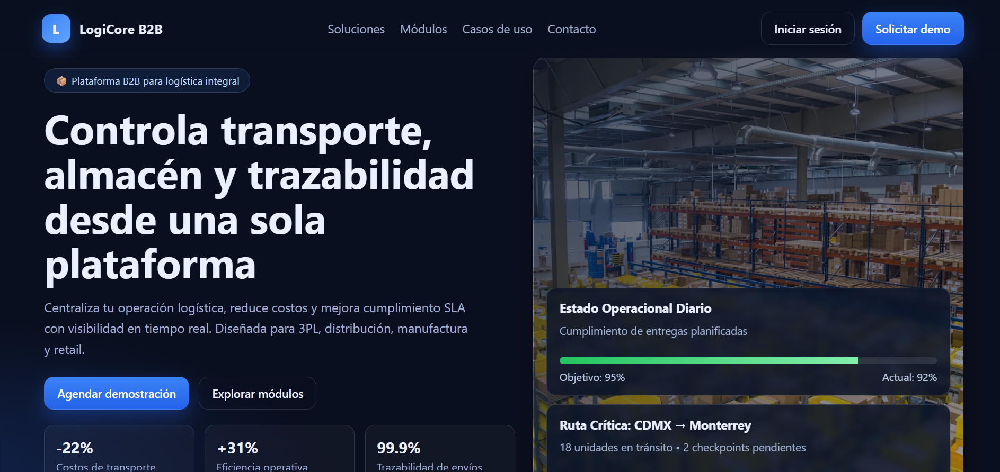

Preview pendiente: agrega la captura en assets/img/previews/plataforma-b2b-logistica.pngPlataforma B2B Logistica (via agencia)
Objetivo: aumentar solicitudes de cotizacion desde desktop y mobile.
Mi rol: desarrollo web completo de la capa publica y seccion de captacion.
Enfoque de diseno: arquitectura de contenido, interfaz modular y flujo de captacion claro.
Percepcion lograda: propuesta comercial mas ordenada, confiable y facil de accionar.